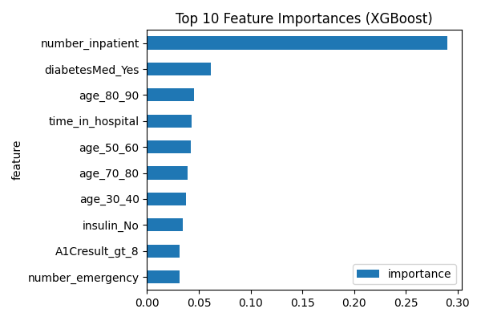
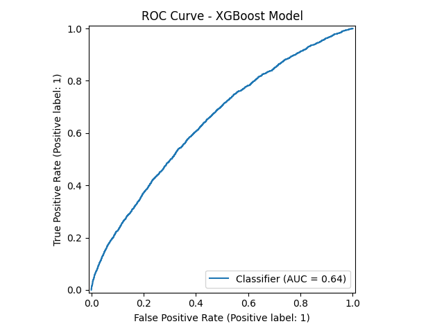

Built an end-to-end machine learning pipeline to predict 30-day hospital readmissions using structured electronic health record data. The project includes SQL-backed data access, preprocessing in Python, baseline and tree-based models, class imbalance handling, threshold tuning, and clinical interpretation of results.
Performance snapshot
XGBoost achieved ROC-AUC ~0.64 with improved recall compared to the baseline model.The model improved detection of high-risk patients while keeping the workflow grounded in clinical interpretation.
Highlights
- Developed a full workflow from data cleaning to model evaluation
- Compared Logistic Regression and XGBoost for binary classification
- Improved detection of high-risk patients with XGBoost
- Identified prior inpatient visits and disease severity as major drivers of readmission risk
Tools and methods
Python, SQL, Scikit-learn, XGBoost, time-series modeling, data cleaning, visualization, and healthcare data analysis.

Prior inpatient visits and severity-related clinical variables stood out as the strongest contributors to predicted readmission risk.

The curve reflects meaningful lift over baseline while supporting a higher-recall screening workflow for high-risk patients.